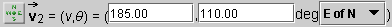
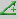
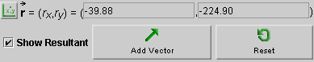

After the applet has loaded, or upon Reset, the applet window
above the control panel will display two vectors,  1 and 2, joined tip to tail. The vectors can be changed,
either by dragging their tips or by entering new values in the vector data fields
illustrated above, followed by pressing Enter.
1 and 2, joined tip to tail. The vectors can be changed,
either by dragging their tips or by entering new values in the vector data fields
illustrated above, followed by pressing Enter.
The vector data fields let you specify a vector
in four ways, which are described below.
In the snapshots above, vector 1 is specified using the 'Polar
(positive)' method and vector 2 using the 'Navigational' method.
To choose a different method, click the toggle
button  to the left
of a data entry field. By clicking the button repeatedly, you
can toggle through the four different vector specification modes.
The two vectors can be moved in the display area, without changing the vectors themselves, by dragging either vector anywhere other than at its tip.


To display the resultant (sum) of two or more vectors, check the checkbox
labeled 'Show Resultant'. The resultant vector  will be displayed in green and its coordinates displayed in a new data entry field (grey).
In the snapshot above, the coordinates are displayed in the 'Cartesian'
mode. The other modes can be selected by clicking the toggle button on the left.
will be displayed in green and its coordinates displayed in a new data entry field (grey).
In the snapshot above, the coordinates are displayed in the 'Cartesian'
mode. The other modes can be selected by clicking the toggle button on the left.
If one of the two vectors to be added is changed, the resultant is removed and the checkbox must be checked again to show the new resultant.

If you want to add a third vector to the two already present, click the Add-Vector button.
A third vector, 3, and a data entry field for
the new vector will be added. The vector will be shown with its tail end
joined to the tip of vector 2. You can change
the new vector by either dragging its tip or entering new values in its data entry field
and pressing ENTER.
The data entry field for vector 3, in the
'Polar (pos & neg)' mode, is illustrated below.

Additional vectors can be added by clicking the Add-Vector button again.

Resets the applet to its initial state with the same two initial vectors.